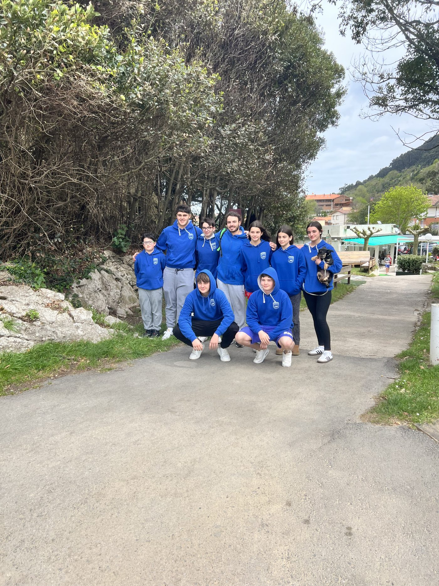
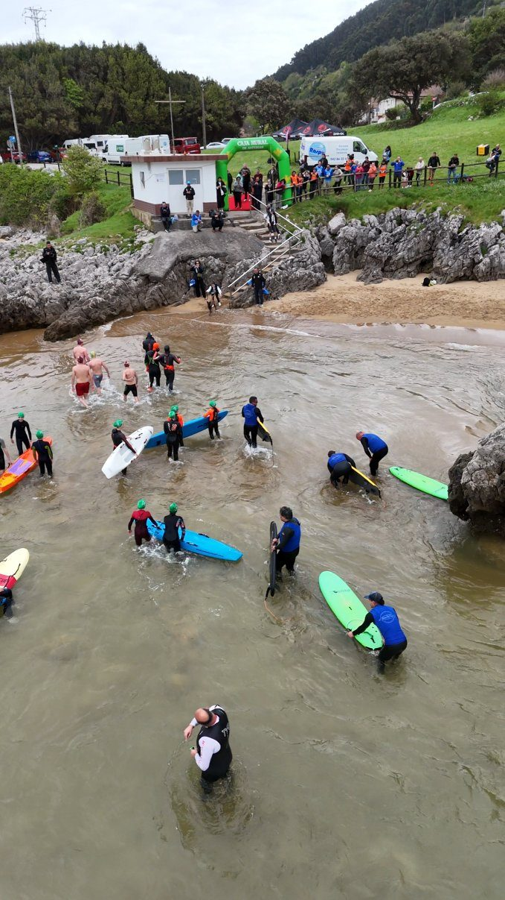
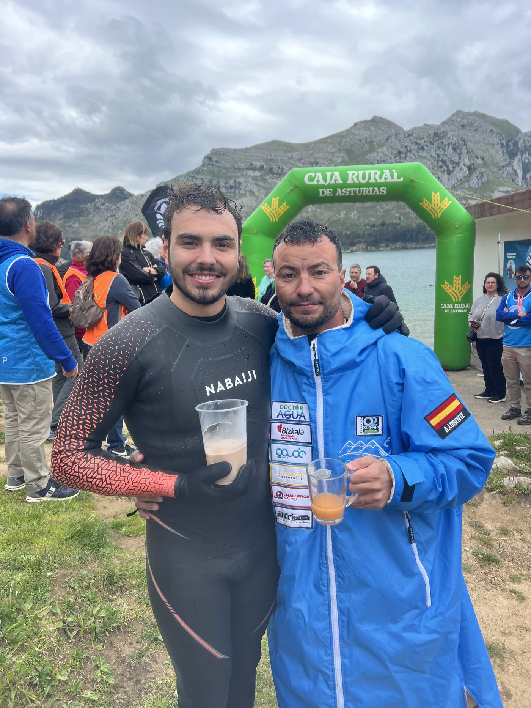

El mar Cantábrico no perdona. Quien ha nadado en él lo sabe. No es el Mediterráneo de aguas templadas y fondo plano. Es impredecible, frío, y tiene la costumbre de recordarte en todo momento que estás en su terreno. El 21 de abril de 2025 me metí en ese mar con dos personas que no conocía demasiado y salí con dos amigos para toda la vida.
Cómo empezó todo
Alberto Lorente llevaba meses nadando la Vuelta a España. Etapa a etapa, costa a costa, convirtiendo uno de los retos de aguas abiertas más ambiciosos que se han hecho en este país en una realidad. Cuando me propuso acompañarle en la etapa de Cantabria, no dudé.
Se sumó David Mayo, nadador de Castro Urdiales acostumbrado a estas aguas. Y yo, que llevo toda la vida metiéndome en el Cantábrico y sé perfectamente lo que implica.
El reto tenía un propósito claro: promover la limpieza de playas y océanos. Mientras nosotros nadábamos, en las playas de salida y llegada se organizaron batidas de recogida de basura dirigidas por Quique Bolsitas —profesor de educación física y activista medioambiental— junto a Mi Pueblo Limpio, una asociación cántabra que moviliza a la gente para limpiar el litoral. El reto dentro del reto.
Las semanas antes
Publicamos el evento en redes y la respuesta superó lo que esperábamos. Pero lo que de verdad marcó un punto de inflexión fue grabar un vídeo con Miguel Ángel Revilla, expresidente de Cantabria. Lo compartió en su cuenta, lo respaldó públicamente, y de repente aquello dejó de ser "un reto de tres nadadores" para convertirse en algo por Cantabria.
El IES Ricardo Bernardo de Solares me dejó promocionarlo en sus clases gracias a su directora Chari, un encanto de mujer. Ver la reacción de los chavales, su curiosidad, su energía —eso ya fue una recompensa antes de haber nadado un solo metro.

Los nadadores del CN Medio Cudeyo que se acercaron a apoyarnos · Islares, Cantabria
El día del evento había más gente de la que esperaba.
Castro Urdiales, por la mañana
El plan era nadar desde Castro Urdiales hasta Islares. Once kilómetros en línea recta. Con buenas condiciones, tres horas de nado aproximadamente.
Las condiciones no eran buenas.
Empezamos con el mar razonablemente manejable, pero desde el primer kilómetro quedó claro que íbamos más lentos de lo previsto. El oleaje no era violento, pero tampoco cedía. Cada brazada costaba un poco más de lo que debería.
A mitad de recorrido, una de las motos de agua que nos escoltaba se estropeó por las olas. El barco tuvo que acompañarla hasta el puerto. Nos quedamos con un único barco. Ese barco tampoco pudo volver a salir: el oleaje y la corriente se lo impidieron.
Tres nadadores. Un barco. El Mar Cantábrico abierto delante.
Lo que nadie ve desde la orilla
Hay momentos en el agua en los que dejas de pensar en el destino y te concentras únicamente en lo que tienes delante: la siguiente ola, la siguiente brazada, el horizonte que no parece acercarse.
Lo que en papel eran 11 kilómetros se convirtieron en aproximadamente 15. Las corrientes no negocian.
El agua estaba fría. El oleaje, constante. El viento, en contra en los peores momentos. Nada que no supiéramos que podía pasar. El Mar Cantábrico no te sorprende si lo conoces —simplemente te exige que estés a la altura.
Y lo estuvimos.
La llegada

La llegada a Islares · Reto Cantabria · 21 de abril de 2025
Cuando tocamos tierra en Islares, llevábamos horas en el agua. El cuerpo acusaba el frío, el esfuerzo, la concentración sostenida durante todo ese tiempo.
Y entonces vimos a la gente.
No sé si alguna vez he agradecido tanto un aplauso. Ver a tanta gente esperando en la orilla, después de todo lo que había pasado en el agua, fue uno de esos momentos que no se olvidan. La hipotermia seguía ahí, el cansancio también. Pero eso ya no importaba.

Con Alberto Lorente al terminar el reto · Islares, Cantabria
Lo que me llevo
Me llevo el recuerdo de un día que no iba a salir bien y salió. Me llevo la imagen de Alberto y David dando todo en condiciones que pondrían a prueba a cualquiera. Me llevo la certeza de que el Mar Cantábrico es duro, pero que precisamente por eso vale la pena.
Y me llevo algo que no estaba en el plan: dos amigos de verdad.
Hay retos que haces para demostrar algo. Este lo hice para acompañar una causa que merece la pena y terminé llevándome mucho más de lo que di.
Eso es lo que tiene el mar. Que nunca te devuelve lo mismo que le das.
¿Qué te ha parecido? Cuéntamelo en Instagram — @coachsergiordonez
Nunca nadarás solo.
Si quieres empezar o llevar tu natación más lejos — en piscina o en aguas abiertas — hablamos sin compromiso.
Empieza ahora